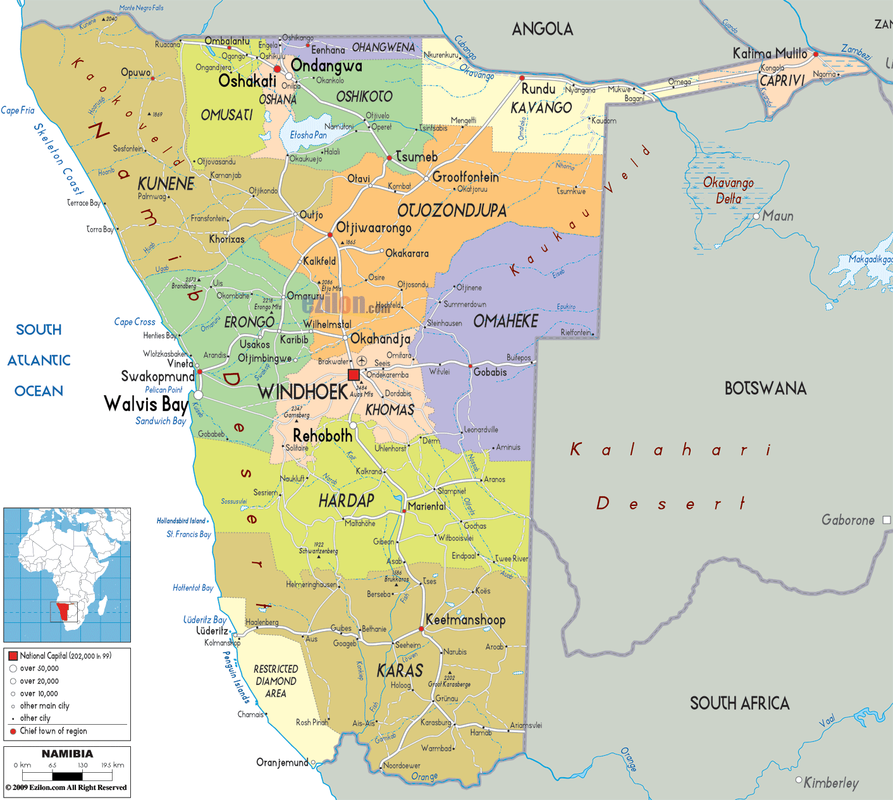
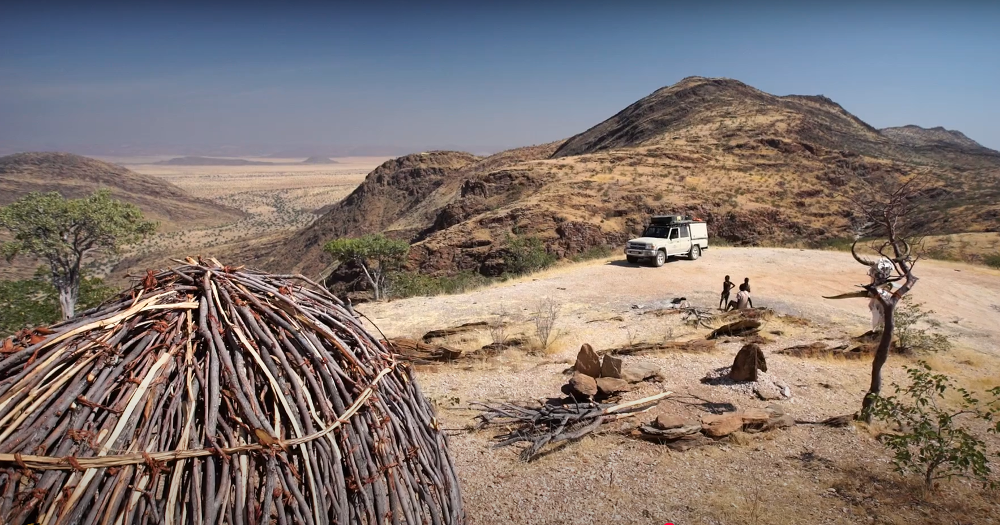

This region comprises the Swakopmund magisterial district up to the Ugab river and includes the enclave of Walvis Bay, former Damaraland south of the Ugab river, and the Omaruru and Karibib magisterial districts. This region is named after the Erongo mountain, a well known landmark in Namibia and in this area. All the main centres within this region, excepting south of former Damaraland, are connected by tarred roads. Gravel roads link this this part with either Omaruru or Swakopmund. The inclusion of former South Damaraland is necessitated by various services for this part which originate in Omaruru. Postal and telecommunications services for Omatjette, Okombahe and Uis are maintained from Omaruru. Veterinary services for these areas are provided by the State Veterinarian based at Omaruru. The maintenance of roads falls under the Roads Superintendent of Omaruru. Medical services are rendered at the clinics of Omatjette, Okombahe, and Uis by medical personnel and private doctors stationed at Omaruru. The main hospital centre for this area is in Omaruru.
The Omaruru, Karibib and Okombahe/Uis/Tsubeses areas are all situated in a semi-arid farming region and have a homogenous farming pattern, which is mostly stock-raising. It also combines communal farming with commercial farming. The needs for production and marketing are therefore very similar and the farming community has a distinct mutual interest which distinguishes their area from the Okahandja/Otjiwarongo areas which are different in various aspects.
Various mining operations occur within this region at places such as Navachab and on a smaller scale at places surrounding Uis and the desert area. Karibib also has a marble industry. Walvis Bay is the principle home of Namibia’s fishing industry. Arandis supports mining industry and Swakopmund boasts manufacturing. Arandis is also an Export Processing Zone (EPZ).
This region, with its link to the coast of Namibia, is well developed and should not experience any difficulty in functioning as an administrative unit. Facilities such as schools, hospitals and clinics, the supply of electricity and telecommunication services are, with a few exceptions, well established. The linkage of this predominantly farming area with the more developed areas such as Swakopmund and Walvis Bay is territorially justified and can only be to their advantage.
The region comprises of six constituencies: Omaruru, Karibib, Brandberg, Arandis, Swakopmund, Walvis Bay.
This region comprises the western part of former Ovambo, Koakoland, Damaraland north of the Ugab river and the Magisterial District of Outjo. This region is named after the Kunene river which forms the north-western border of this particular region. With its large supply of water and its hydro-electric plant, this river will play an increasingly important role in Namibia
The main centers of this region are connected by gravel and tarred roads. Opuwo, Khorixas, Kamanjab and Ruacana are linked with constructed gravel roads whereas Khorixas and Kamanjab are in turn linked to Outjo by tarred roads. The communication system of this region, excepting Ruacana, runs from Outjo and is maintained from this centre. The railway line serving most of Region ends at Outjo from where consumer items and other goods are distributed through the region.
One of the unique features of this region is its many tourist attractions. Places such as former Kaokoland, Damaraland and Ruacana will become more accessible to tourists once the planned tarred road running from Ruacana to Kamanjab and the coast becomes a reality. With Outjo as one of the two entrance points to the National Etosha Game Reserve, tourism will become a major revenue source to this territory which is otherwise somewhat underendowed with natural resources.
At its main centers, the region has facilities such as primary and secondary schools, clinics and hospitals and electrical power supply. Although these facilities are not always sufficient to provide for all the needs of the community, the necessary infrastructure for further development is available.
Furthermore a lively trade has developed between this western part of former Ovambo and more particularly the people of former eastern Kaokoland. There is also evidence that people from former Ovambo have moved into former Kaokoland and vice versa.
The region has been divided into the following six constituencies: Ruacana, Opuwo, Sesfontein, Khorixas, Kamanjab and Outjo.

Maps
Trip details
**Herewith a very short summary of the Namibia tour that is on offer:**
Kaokoland and Damaraland safari with Khwela Adventures & Specialised Adventures
This includes the following:
- All the accommodation fees in Namibia
- Tent, stretcher, mattress & camping chair
- All cutlery & crockery
- Breakfast, lunch packs & supper
- Fresh water and Cold drinks
- Ice when available - 60% of the trip
- Backup and recovery vehicles
- Medical officer
- Aerial evacuation arrangements with an Evacuation Company. (You will need to notify your medical aid of your intention to ride in Namibia and send us written confirmation of coverage)
- Fuel for your bike in the areas where no fuel is available - with the understanding that you fill your bike where it is available. (budget around R1000 for it)
- Daily briefing on the route for the day.
- Tracks and routes (depending on your preferred format) uploaded to your GPS.
- Tools.
- Compressors.
- Puncture repair equipment.
- Satellite phone (For emergencies in the remote areas, where there is no Wi-Fi and you need to re-assure the plaintiff that you are in fact still alive)
Our route for the Namibia tour will take you through Damaraland and Kaokoland and you will ride through and see places like Spitzkoppe, Van Zyl's pass, the Marienfluss, Purros Canyon, Brandberg and much more. Our Namibia trips are usually 12 days in total.
We will also assist in getting your bike to Namibia and back wherever possible at a very reasonable fee. We are based in Loxton and Pretoria and riders that fly to Windhoek will have to get their bikes to us.
We can only take 16 riders per trip, so please make sure you book asap.
These trips are not races. It is a true dual sport adventure in one of the most beautiful and fascinating places on earth. The average rider will in all likelihood stop and take pictures 20 times a day. You will need some degree of skill and experience as we will ride some sand and rocky mountain passes during the trip.
You will have to ride with a camel back, and take re-hydrates daily, as dehydration becomes your worst enemy in the desert.
I highly recommend that you give Hardy (our tour leader) a call for any questions that you may have. He would be the best person to speak to regarding the area's where we conduct our tours, as well as any logistical questions you may have. His number is 082 784 0729
Date
Support vehicles
Good overview of van Zyl’s pass
Soul Tonic life series - Great!
One of the greatest offroad passes
Note - there is an alternate route down
Contacts in Namibia
Trans-Kalahari Corridor Secretariat +264 61 250 071 Ministry of Works,Transport and Communications +264 61 2088111 Road Fund Administration +264 61 433 3000 Road Authority +264 61 284 7000 Ministry of Environment and Tourism +264 61 284 2111 Namibia Tourism Board +264 61 2906000 Museums Association of Namibia +264 61 302230 Ministry of Trade and Industry +264 61 283 7258 Ministry of Industrialisation, Trade and SME Development+264 65 251 087 Namibia Revenue Agency +264-61-2099111/ +264 61 411 800
Route
Trailer There (2 days)
Start Date 03-08-2025 (Monday)
| Weekday | Day | From | To | Est Time | Distance | Fuel stop | Refuel | Fuel consumed | Lodging Avail | Water | Replenishment | Camp Site | Contact details | Notes |
|---|---|---|---|---|---|---|---|---|---|---|---|---|---|---|
| Mon | 01 | Henties | Spitzkoppe | 5h | 150kms | - | 150 | Yes | - | Camp Site | Sleep under the stars | |||
| Tue | 02 | Spitzkoppe | Brandberg | 4.5h | 155kms | UIS (~135kms) | ~285 | 35 | Yes | Water? | White Lady | Sleep under the stars | ||
| Wed | 03 | Brandberg | Palmwag | 5.5h | 190kms | Palmwag | ~225 | Yes | Palmwag Lodge Campsite | Sleep under the stars | ||||
| Thur | 04 | Palmwag | Opuwo | 4h | 235kms | Opuwo | ~235 | Yes | Everything | Opuwo Country Lodge Campsite | Sleep under the stars | |||
| Fri | 05 | Opuwo | Epupa | Yes | ||||||||||
| Sat | 06 | Epupa | vz Riverside | |||||||||||
| Sun | 07 | vz Riverside | Marble | |||||||||||
| Mon | 08 | Marble | Puros | |||||||||||
| Tue | 09 | Puros | Khowarib | |||||||||||
| Wed | 10 | Khowarib | Palmwag? | |||||||||||
| Thu | 11 | Palmwag? | Henties | |||||||||||
| Fri |
Assigned responsibilities
Transclude of Sketch
Tyres / Spares / Puncture repairs - Andrew Hydration - Barry Routes - Rainer Lodges / Campsites - Rainer Finances / Receipt / Deposits / Payments - Ludwig Fuel Reserves / Refilling - Marc Trailer(s) / Transporting / Stowage - Mike Communications (Internal / External) - Derek Emergency planning - Gunther Stock / Meals / Ingredients - Mark Supplies / Replenishment - Barry Spares / Puncture / Tools - Keith Support vehicles - Camping amenities - Logistics - There & Back - Refrigeration - Medical provisions / capability - Cross Border admin - Paperwork / Insurance / Cellular / Veternary
Costs
R22,500.00 per person (excluding flights and bike transport).
Bike transport from JHB return R900.00
Group Flight Booking From JHB to Windhoek est R3000.00
Regards Treffon & Mark
Stop overs
Khowarib is a little community smack bang on the C43 en route to Opuwo. It’s not well known, but that’s precisely what makes it so special. It’s a hidden gem and a wonderful place to stop to break up the long journey in Kaokoland, especially if you’re on your way to Opuwo from destinations further south.
What makes it so special? Well, Khowarib is set at precisely the position where the desert begins to meet the tropics. There’s still a desert vibe, but vegetation becomes more lush and – gasp! – there’s even water in the river! It reminds us of the area around the Jatbula Trail in Australia.
With not a lot of visitors, Khowarib is also incredibly tranquil. There’s not a ton to do here, but if it’s relaxing you’re after, look no further.
Where to Stay in Khowarib
There are two places to stay in Khowarib, both of which are fine choices.
Khowarib Community Campsite

Khowarib Community Camp was one of our favourite campsites in Kaokoland
Phone: +264 64 402 779
Key Contacts
Name: Nelo Kasaona
Mobile: +264 81 710 9596
Name: Josephine
Mobile: +264 81 407 9539
GPS Coordinates
Latitude: -19.26622009277343800
Longitude: 13.88366985321045000
Khowaib Lodge - Camping
Camping
The campsite has nine camping pitches benefitting from 220V mains electricity and access to a communal ablution block with hot water showers. Each camp has its light, tap and wash-up area, shade port, maintained braai (BBQ) area, and a rubbish bin.
The campsites at Khowarib have their own restaurant, bar, swimming pool, and lawn area.

Rate: N600 - 2 adults
Tel: +264 64 402 779
Cell (Lodge direct): [+264 81 2193291](tel:+264 81 2193291)
Email: reservations@khowarib.com
Lodge - Self catering
The en-suite tents are a short walk from the lodge to the river bank and either have a double or twin beds. Viewing platforms extend from the front of each tent, shaded by the plentiful mopani trees but affording splendid views of the gorge. The open-air bathrooms are spacious and well equipped, adding to the feeling of indulgence and relaxation that Khowarib Lodge offers.
Rate: N2150 - per 2 persons

Camp sites
Where to Get Supplies in Kaokoland
Opuwo is pretty much the only place to stock up on supplies in Kaokoland. Be sure to stock up well, because once you leave Opuwo, you won’t find a hell of a lot else.
Fortunately, you can find most services you need in Opuwo. There are two supermarkets: an OK Food and a Spar – OK Food has a better selection than Spar. There are a number of pharmacies in town if you need any medication.
There are plenty of fuel stations and, helpfully, a solid mechanic if you need to get work done or buy a new tire (trust us, you might). If you find yourself in need of tires or a repair, head to Kunene Outfitters, which is in the orange and black building near the OK Food.
There are a number of roadside tire repair places in Kaokoland, but they don’t always do the best job. If you need some work on our tires, you’re best off doing so in Opuwo.
Purros
Marble Camp
Emergency
Evacuation
Hellivac
Hospital / Clinics
Documents
Indemnity
Med aid
Please fill out the forms and send them back to me by the 30th of April 2019, along with certified copies of the following documents:
- Id
- Passport
- Motorcycle natis document
Please keep all the original certified documents and forms so that they can be handed to Janco or Hardy on the day that you drop off your motorcycle with one of them.
Please note that you need to notify your medical aid that you will be traveling in Namibia on motorcycles. We will also need confirmation of coverage from your medical aid or any alternative company you might use for your international travel medical insurance. By providing this information to the evac company ahead of time, it will make the process much smoother in the event of an emergency evac situation.
“Word of advice to the group. Advising your medical insurance (Discovery etc.) that you are headed off into deepest darkest is required but don't let that provide you with false security. Discovery in particular are particularly useless when it comes to supporting you abroad when the proverbial hits the fan. Taking out a decent travel insurance package actually allows for much faster results when it comes to medical treatment, casa-vacs and the likes thereof.”
Others that have done similar trips
Important Contacts
Dirkie Baard
https://www.facebook.com/untamedadventuresnamibia
This number is on the site: +264 81 295 3807
Johnny Wildwood
https://www.facebook.com/wildwoodtours
083 325 2381
Restrictions

Overlanders from SA to Namibia, take note of these restrictions: no cooked/processed animal products (frozen suppers, meatballs or chicken drumsticks for padkos, ham for sandwiches, cheese, etc) will be allowed to cross the border - unless you have a valid veterinary import permit. Use the contact details at the bottom of the notice to apply for an own use import permit for cooked/processed animal products (meat and dairy). Follow Drive Nam for a detailed unpacking of this regulation.
It’s time to explore the amazing Kaokaveld on two wheels once again!! I’ve done it twice before; 2009 with friends and 2019 with Mark Hardy, from Specialised Adventures. Both trips were hyper special - This is a bucket list trip!!
It is possible to do the trip without support / backup but we’re doing it in style … a support crew reduces risks and makes thing more comfortable, not to mention the joy of riding without luggage!
We will be organising things on our own - based solely on a cost covering drive. We will be leaning on those of you that have experience to help organise and guide the planning.
We want to see and explore some of the best parts of that the Kaokaveld and a bit of Damaraland. Barabara Muszynski, who’s done extensive research and planning for her own trips has shared her experiences and trip details with me already - giving us a draft version 1 of the route. She has graciously offered to share her experience with us and answer questions - she’s part of this group. (Thanks Minxy)
Introducing the other amigos …
Covering Support and Logistics, we have … George Paneras … A Civil engineer and Retired Business man … aka “The negotiator” … He’s done what many dream of … dozens of 4X4 excursions over the last few decades … he’s well aquainted with 4X4 travels, trailers and in particular, Namibia. With Kaokaveld on his CV and having been to many of the spots we’re heading to - we appreciate the part he will play.
Barry Corbett … a brewmaster by day, IT Tech specialist and a Removal man … the best man to keep us going and our hunger and thirst in check!
Engineering geeks … Mike Puzey … a legend in his own right … a mechanical wizard … what he doesn’t know isn’t worth knowing… Gunther Wurcher … creative steel works guru … Not very good with GPS … got a few scars as evidence of his love for offroad Andrew Ernst … a passionate engineer … knows a few things about about tech
Other amigos… Derek Lubbe … A classier architect you’ll struggle to find … has a massive passion for two wheel adventure … spent many weeks touring Namibia on two wheels … also known to strum a good tune Chris and brother Andrew Ogden … the quite assassins … demons on two wheels … Chris Amageza finisher … EC Based Ludgwig Buchner (Ludo) … almost good at almost anything … Amageza last man standing … Insurance boff Marc (Mooch) … always in for the good times … not scared of much … and got the scars to show for it! Keith Lyon … Two wheels is like duck to water - this trip should put some spice back in his pond Florian Emil … Austrian Nutter .. Anything goes … Ridden Africa top to bottom and back … Need extra beer just for FLo
Nearly 50% Zimbo’s in the lineup … I can see beer planning becoming a top priority
General Notes:
Riding will be a mix of gravel, jeeptrack, riverbed and some rocky and mountainous tracks. We will be going over a few passes including the well known van Zyl’s pass. Be prepared for a fair amount of soft sand. The larger the bike the more sweat. 500 - 700cc sized bikes with a minimum of 300kms range are ideal.
Many of the planned stop overs have campsites and refuelling facilities but there are a few days where we will be very remote - which means good fuel range needed with some reserves on board.
There are subgroubs created in this community group. Join the groups you’re interested in following or contributing. Please post in the relevant group. (e.g., don’t drop tyre questions in the Meals group). This is a closed community. Community admins will be myself and the support and logistics team.
Even though there are names associated with topics everyone is encouraged to participate in the detailed planning … The general plan is to get all the suggestions / ideas and decisions into a single collection for each topic. The names listed below will help to facilitate that.
Routes 📍 - Rainer Support 🚚 - George To Henties & back 🚛 - George Camping & Lodging ⛺ - Rainer Rider details ✝️ - Rainer Medical & Emergencies 🚨 - George Costs 🤑 - Rainer Supplies 🎰 - Barry Meals 🥘 - Barry Trailers 🚛 - Gunther & MikeP Hydration 🥤 - Barry Tyres / Mousses / Repairs ⚽ - Andrew Ernst Camping amenities ⛺ - George Communication 📡 - Andrew & George Fuel ⛽ - George & TBA Refrigeration & Ice 🧊 - George Border control, papers etc. 🛂 - George Power, chargers etc. 🔌 - George Tools / Spares - 🧰 George & Andrew
Use the General group for general banter.